건설재료시험산업기사 (2013-09-28 기출문제)
1과목: 콘크리트공학
1. 일반콘크리트의 받아들이기 품질검사 판정기준에 대한 설명으로 틀린 것은? (단, 콘크리트표준시방서 규정을 따른다.)
- 공기량은 허용오차는 ±2.0% 이내 이어야 한다.
- 염소이온량은 원칙적으로 0.3kg/m3 이하 이어야 한다.
- 슬럼프값이 30mm 이상 80mm 미만일 경우의 허용오차는 ±15mm 이다.
- 슬럼프값이 80mm 이상 180mm 이하일 경우의 허용오차는 ±25mm 이다.
(정답률: 47%)

2. 프리스트레스트콘트리트에서 프리스트레싱 할 때의 콘크리트의 압축강도는 프리스트레스를 준 직후, 콘크리트에 일어나는 최대 압축응력의 몇 배 이상이 되어야 하는가?
- 1.7배
- 2.7배
- 3.7배
- 4.7배
(정답률: 85%)
3. 온도균열지수가 1.0일 때의 균열 발생 확률은 대략 몇 % 인가?
- 40%
- 50%
- 60%
- 70%
(정답률: 80%)
4. 매스(mass)콘크리트의 시공시에 가장 문제가 되는 현상은?
- 온도균열의 발생
- 건조수축의 발생
- 크리프변형의 증가
- 급속냉각현상
(정답률: 80%)
5. 슬럼프시험에서 슬럼프콘에 콘크리트를 채우기 시작하고 나서 슬럼프콘의 들어올리기를 종료할 때까지의 시간은 얼마 이내로 하여야 하는가?
- 2분
- 3분
- 3분 30초
- 4분
(정답률: 90%)
6. 시험에 의해서 W/C비를 결정하기 위해서 C/W비를 1.6, 1.8, 2.0으로 변화시켜 가면서 f28을 구한 결과 각각 15, 18, 21MPa 의 압축강도를 얻었다. 이로부터 구한 관계식 f28 = A + B(C/W)에서 A와 B의 값은 각각 얼마인가?
- A : -7.6, B : 19
- A : -21, B : 21.5
- A : -14, B : 23
- A : -9, B : 15
(정답률: 25%)
7. 품질관리의 기본 4단계에 속하지 않는 것은?
- 계획
- 준비
- 실시
- 조치
(정답률: 83%)
8. 일반콘킈트 재료의 계량에 대한 설명으로 틀린 것은?
- 각 재료는 1배치씩 질량으로 계량하여야 한다.
- 물과 혼화제 용액은 용적으로 계량해도 좋다.
- 혼화제를 녹이는데 사용한 물은 단위수량의 일부로 보지 않는다.
- 골재 1회 계량분에 대한 허용 계량오차는 ±3% 이다.
(정답률: 73%)
9. 경화한 콘크리트의 체적변화에 관한 설명 중 틀린 것은?
- 건조수축은 단위수량의 영향보다 물-시멘트비의 영향이 더 크다.
- 단위수량이 동일한 경우 공기량이 클수록 건조수축은 크다.
- 물-시멘트비가 일정한 경우 건조수축은 단위시멘트량이 클수록 크다.
- 시멘트의 화학성분 중 C3A의 함유량이 크면 건조수축은 크다.
(정답률: 12%)
10. 콘크리트의 시공 이음에 대한 설명 중 옳지 않은 것은?
- 먼저 타설한 콘크리트의 레이턴스를 그대로 두거나 표면을 매끄럽게 한 뒤에 연속시공을 해야 한다.
- 콘크리트의 수축량을 고려하여 콘크리트 타설 높이를 결정해야 한다.
- 시공 이음의 위치는 전단력이 작은 위치에 설치해야 한다.
- 시공 이음의 방향은 압축력에 직각인 방향으로 해야 한다.
(정답률: 65%)
11. 압축강도 시험의 기록이 없는 현장에서 설계기준압축강도가 20MPa 인 경우 배합강도는?
- 27 MPa
- 28.5 MPa
- 30 MPa
- 31.5 MPa
(정답률: 73%)
12. 설계기준압축강도가 24MPa인 콘크리트 슬래브의 시공에서 슬래브 밑면의 거푸집널은 콘크리트 압축강도가 최소 몇 MPa 이상인 경우 해체할 수 있는가?
- 5 MPa
- 8 MPa
- 14 MPa
- 16 MPa
(정답률: 15%)
13. 수밀 콘크리트의 재료 및 시공에 대한 설명으로 틀린 것은?
- 물-결합재비는 50% 이하를 표준으로 한다.
- 콘크리트의 소요 슬럼프는 180mm를 넘지 않도록 한다.
- 공기량은 4% 이하가 되게 한다.
- 단위 굵은골재량은 되도록 적게 한다.
(정답률: 56%)
14. 콘크리트의 크리프(Creep)에 대한 설명으로 틀린 것은?
- 부재치수가 작을수록 크리프가 커진다.
- 온도가 높을수록 크리프는 커진다.
- 재하시 재령이 클수록 크리프는 커진다.
- 양호한 배합의 경우 물-시멘트비가 클수록 크리프는 커진다.
(정답률: 56%)
15. 알칼리골재반응을 막기 위한 대책으로 옳지 않은 것은?
- 반응성 골재를 사용하지 않는다.
- 빈배합의 콘크리트로 시공한다.
- 0.6%이하의 알칼리량을 함유한 시멘트를 사용한다.
- 적당한 포졸란 또는 고로 슬래그를 사용한다.
(정답률: 72%)
16. 벽 또는 기둥 등에서 콘크리트를 쳐 올라가는 속도는 30분에 얼마 정도로 하는 것이 적당한가?
- 0.5 ~ 1m
- 1.0 ~ 1.5m
- 1.5 ~ 2.0m
- 2.0 ~ 2.5m
(정답률: 79%)
17. 단위수량이 175kg, 단위시멘트량 378kg, 공기량이 4.5%, 시멘트 밀도가 3.15g/cm3, 잔골재 밀도가 2.60g/cm3, 굵은골재 밀도가 2.65g/cm3, 잔골재율이 40%인 배합조건으로 시방배합을 할 때, 단위 굵은골재량은 약 얼마인가?
- 680 kg
- 690 kg
- 1025 kg
- 1⑤0 kg
(정답률: 41%)
18. 콘크리트 강도시험용 공시체의 양생에 가장 적합한 온도는?
- 10 ~ 15℃
- 18 ~ 22℃
- 22 ~ 26℃
- 26 ~ 30℃
(정답률: 75%)
19. 콘크리트를 타설한 후 습윤양생을 하는 경우 습윤상태의 보호기간은 보통포틀랜드 시멘트를 사용한 경우 얼마 이상을 표준으로 하는가? (단, 일평균기온이 15℃이상인 경우)
- 1일
- 3일
- 5일
- 7일
(정답률: 80%)
20. 섬유보강 콘크리트에서 사용되는 보강용 섬유로 적합하지 않은 것은?
- 강섬유
- 폴르프로필렌섬유
- 탄소섬유
- 면섬유
(정답률: 72%)
2과목: 건설재료 및 시험
21. 스트레이트(straight)아스팔트 및 블로운(blown)아스팔트의 성질에 대한 설명으로 틀린 것은?
- 블로운 아스팔트는 스트레이트 아스팔트보다 방수성이 작다.
- 스트레이트 아스팔트는 블로운 아스팔트보다 연화점이 높다.
- 블로운 아스팔트는 스트레이트 아스팔트보다 신도가 작다.
- 스트레이트 아스팔트는 블로운 아스팔트보다 감온성이 크다.
(정답률: 42%)
22. 그라우팅용 혼화제로서의 필요한 성질로서 틀린 것은?
- 단위수량이 작고, 블리딩이 작아야 한다.
- 그라우트를 수축시키는 성질이 있어야 한다.
- 재료의 분리가 생기지 않아야 한다.
- 주입하기 쉬워야 하며, 공기를 연행 시켜야 한다.
(정답률: 90%)
23. 시멘트의 강도 시험 방법(KS L ISO 679)에 따라 표준 모르타르를 제작하고자 한다. 사용한 시멘트의 양이 450g일 때 필요한 표준사의 양은?
- 1350g
- 1215g
- 11⑤g
- 900g
(정답률: 70%)
24. 목재의 건조에 대한 설명으로 틀린 것은?
- 목재를 건조하면 수축 및 균열을 예방할 수 있고, 중량 경감으로 취급 및 운반비가 절감되는 효과가 있다.
- 자연건조법에는 공기건조법, 수침법이 있다.
- 열기건조법에서는 증기의 분사로 습도를 조절하여 급격한 건조를 막을 수 있다.
- 목재를 실내에 넣고 톱밥을 태워서 열기 대신에 연기를 이용하는 것을 훈연법이라고 한다.
(정답률: 45%)
25. 다음의 혼화재료 중에서 사용량이 5% 이상이어서 콘크리트의 배합설계에 고려해야 하는 것은?
- AE감수제
- 유동화제
- 급결제
- 플라이애쉬
(정답률: 72%)
26. 강에서 탄소의 함유량이 증가함에 따라 변화되는 강의 성질에 관한 설명으로 틀린 것은?
- 항복점이 작아진다.
- 전기에 대한 저항성이 커진다.
- 인장강도와 경도가 증가한다.
- 비중과 선팽창계수가 작아진다.
(정답률: 64%)
27. 조립률이 2.9인 잔골재와 조립률이 7.30인 굵은 골재를 1:1.5의 무게비로 섞을 때 혼합골재의 조립률을 구한 값은?
- 4.73
- 5.54
- 5.95
- 5.98
(정답률: 78%)
28. 다음 중에서 폭발력이 강하고 수중에서도 폭발할 수 있는 다이나마이트(dynamite)는?
- 분상 다이나마이트
- 규조토 다이나마이트
- 교질 다이나마이트
- 스트레이트 다이나마이트
(정답률: 92%)
29. 포틀랜드시멘트의 클링커 화합물의 특성에 대한 설명 중 틀린 것은?
- C3S는 수화에 의한 발열이 C2S 보다 크다.
- C3A는 수화속도가 대단히 빠르고 발열량이 크며 건조수축도 크다.
- C4AF는 수화열이 적고 수축도 적으며 강도도 작다.
- C2S는 화학저항성은 작고 건조수축이 크다.
(정답률: 33%)
30. 시멘트 64g을 사용하여 비중 시험을 한 결과 르샤틀리에 비중병의 눈금 읽음의 차가 2.5mL 이었다. 이 시멘트의 비중은?
- 3.17
- 3.12
- 3.⑤
- 2.98
(정답률: 44%)
31. Asphalt 침입도 시험에서 표준온도는 얼마인가?
- 20℃
- 23℃
- 18℃
- 25℃
(정답률: 50%)
32. 대폭파 또는 수중폭파 등을 동시에 폭파하 경우 뇌관대신 사용하는 것은?
- 도폭선
- 도화선
- 전기도화선
- 다이나마이트
(정답률: 68%)
33. 석재 시험편의 중량을 측정한 결과 건조 중량이 325g, 수중에서 측정한 중량이 203g, 시험편 침수 후 표면건조 포화 상태의 중량이 327g일 때 이 석재의 표면건조 포화상태 비중은?
- 2.62
- 2.65
- 2.72
- 2.75
(정답률: 25%)
34. 암석의 분류 중 화성암에 속하지 않는 것은?
- 석회암
- 화강암
- 섬록암
- 현무암
(정답률: 55%)
35. 포틀랜드 시멘트(portland cement)의 비중 감소 원인으로 틀린 것은?
- 소성온도가 부족할 때
- 풍화로 인하여
- 성분중에서 SiO2, Fe2O3가 많을 때
- 성분중에서 CaO, Al2O3가 많을 때
(정답률: 39%)
36. 아스팔트의 물리적 성질에 대한 설명으로 틀린 것은?
- 침입도는 아스팔트의 경도를 나타낸다.
- 연화점은 아스팔트가 일정한 점성에 도달했을 때의 온도로 나타낸다.
- 감온성은 아스팔트의 연성을 수치로 나타낸 것이다.
- 인화점은 아스팔트를 가열하여 불이 붙게 되는 최저온도를 말한다.
(정답률: 33%)
37. AE제를 사용한 콘크리트의 특징으로 틀린 것은?
- 콘크리트의 워커빌리티가 개선된다.
- 동결융해에 대한 저항성이 증대된다.
- 물-시멘트비가 일정할 경우 공기량이 증가함에 따라 탄성계수는 감소한다.
- 철근콘크리트의 경우 철근과의 부착력이 증대된다.
(정답률: 50%)
38. 골재의 단위 용적 질량 시험에서 시료를 용기에 채우는 방법 중 충격에 의한 경우를 설명한 아래의 표에서 ( )안에 알맞은 수치는?
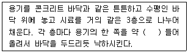
- 1cm
- 5cm
- 8cm
- 10cm
(정답률: 63%)
39. 다음 설명이 의미하는 토목섬유의 종류는?
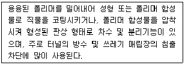
- 지오멤브레인
- 지오네트
- 지오그리드
- 지오텍스타일
(정답률: 77%)
40. 합판의 제조방법 중에서 넓은 폭의 합판이 얻어지며 낭비가 없고 가장 널리 사용되는 것은?
- 로터리 베니어(rotary veneer)
- 슬라이스트 베니어(sliced veneer)
- 소드 베니어(sawed veneer)
- 플라이우드 베니어(plywood veneer)
(정답률: 67%)
3과목: 건설시공학
41. 수밀 콘크리트의 물-결합재비는 얼마 이하를 표준으로 하는가?
- 45% 이하
- 50% 이하
- 55% 이하
- 60% 이하
(정답률: 64%)
42. 주공정선(critical path)에 대한 설명 중 옳지 않은 것은?
- 주공정선(critical path)상에서는 모든 여유가 0 이므로 중점관리 할 필요가 있다.
- 주공정선(critical path)은 개시점에서 종료점까지의 모든 경로 중에서 가장 시간이 긴 공정이다.
- 주공정선(critical path)은 둘 이상일 수도 있다.
- 공기단축을 위해서 주공정선(critical path) 경로상의 작업을 변경할 수는 없다.
(정답률: 49%)
43. 시공기면을 결정하는데 있어서 고려해야 할 사항으로 틀린 것은?
- 성토량과 절토량이 같게 배분할 것
- 연약지반이 있는 경우에는 이에 대처할 수 있는 작업을 고려할 것
- 암석 굴착량은 되도록 많게 할 것
- 성토와 절토의 양을 최소로 할 것
(정답률: 78%)
44. 댐 위치 결정에 대한 설명으로 틀린 것은?
- 지형 및 지질조건이 양호하여 충분한 저수용량을 확보할 수 있는 곳
- 기초 지반이 견고하여 누수가 없고 열화의 우려가 없는 곳
- 댐 지점의 양안의 폭이 넓어서 댐 체적이 커지는 곳
- 공사재료 구득이 쉽고 여수로 설치가 용이한 곳
(정답률: 83%)
45. 콘크리트는 신속하게 운반하여 즉시 치고 충분히 다져야 한다. 비비기로부터 치기가 끝날 때까지의 시간은 원치걱으로 얼마를 넘어서는 안 되는가? (단, 외기온도가 25℃ 미만인 경우)
- 1시간
- 1.5시간
- 2시간
- 2.5시간
(정답률: 83%)
46. 18,000m3의 자갈을 3m3의 덤프트럭을 운반할대 1일 운반가능 횟수가 10회이며, 6일간 전량을 운반하려면, 1일 몇 대의 트럭이 소요되는가?
- 100대
- 150대
- 200대
- 250대
(정답률: 76%)
47. 각종 준실선의 특징 중 틀린 것은?
- 펌프 준설선은 준설과 매립을 동시에 할 수 있다.
- 버킷 준설선은 해저를 평평하게 할 수 있다.
- 디퍼 준설선은 협소한 토질에서 단단한 토질의 준설에 적합하다.
- 그랩 준설선은 대규모 준설에 적합하고 준설단가가 비교적 싸다.
(정답률: 52%)
48. 히빙(heaving)의 방지대책에 관한 설명 중 옳지 않은 것은?
- 기초의 근입 깊이를 짧게 한다.
- 표토를 제거하여 흙 하중을 작게 한다.
- 지반을 개량한다.
- 굴착면에 하중을 가한다.
(정답률: 56%)
49. 내부마찰각이 0인 점토 지반을 연직으로 굴착하다가 6m 굴착 지점에서 활동면이 발생하여 붕괴되었다. 이 흙의 단위중량 γ=1.8t/m3 이면 점착력 c는 얼마이며, 안전율 3을 고려하는 경우 몇 m까지 굴착해야 하는가?
- c=2.3t/m2, H=2m
- c=2.7t/m2, H=2m
- c=2.3t/m2, H=3m
- c=2.7t/m2, H=3m
(정답률: 30%)
50. 불도저의 1시간당 압토작업량을 Q2, 1개날의 리퍼작업량을 Q1이라 하면 리퍼로 암석을 파쇄하면서 도저 작업을 할 때의 1시간당 토공량 Q를 구하는 식으로 옳은 것은?
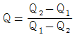
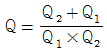
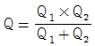
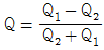
(정답률: 84%)
51. 성토용 다짐기계 중 철륜 표면에 다수의 돌기를 붙여 접지면적을 작게 하여 접지압을 증가시킨 롤러로서 습지와 같은 연약 지반의 다짐에 적당한 것은?
- 탬핑 롤러
- 탠덤 롤러
- 머캐덤 롤러
- 타이어 롤러
(정답률: 65%)
52. 옹벽의 외력에 대한 안정조건에 대한 설명으로 틀린 것은?
- 전도에 대해 안정해야 한다.
- 옹벽의 근입 깊이를 최소로 해야 한다.
- 활동에 대해 안정해야 한다.
- 지반 지지력에 대해 안정해야 한다.
(정답률: 71%)
53. 수로나 도로, 철도 기타 지상구조물의 지하에서 횡단하여 물의 통로를 만드는 지하구조로서 용수, 배수, 운하 등 성질이 다른 수로가 교차하여 합류시킬 수 없을 때, 수로교로서는 안될 때, 또 다른 수로 혹은 노선과 교차할 경우에 사용하는 것은?
- 관암거
- 다공관거
- 함거
- 사이펀관거
(정답률: 86%)
54. Net Work공정표에 관한 설명으로 옳은 것은?
- 네트워크 기법상 작업의 세분화 정도에 제한이 없다.
- 공정상의 문제점 파악이 어렵다.
- 각 작업 간의 순서관계를 명시할 수 없으며, 중점관리를 할 수 없다.
- 전체와 부분의 관계가 명확하다.
(정답률: 44%)
55. 어떤 공사를 실행하는데 있어서 필요한 시간을 추정하니 다음과 같았다. 기대 시간(te)은? (단, 낙관시간 (a) : 10일, 정상시간 (m) : 15일, 비관시간 (b) : 26일)
- 10일
- 13일
- 16일
- 19일
(정답률: 70%)
56. 흙 쌓기 재료로서 갖추어야 할 성질과 거리가 먼 것은?
- 안정성이 있을 것
- 투수성이 클 것
- 다루기 쉬울 것
- 입도가 양호할 것
(정답률: 75%)
57. 샌드 드래인(sand drain)공법에 관한 설명 중 옳지 않은 것은?
- 투수계수가 작은 점성토 지반의 개량공법으로 주로 사용된다.
- 일반적으로 샌드 매트를 부설하여 연약층의 압밀을 위한 상부 배수층의 역할을 하도록 한다.
- 샌드 드레인 설치 시 주위지바닝 교란되기 쉬운 단점을 가지고 있다.
- 모래 말뚝 간격은 점성토의 샌드 매트의 두께에 따라 변한다.
(정답률: 23%)
58. 옹벽의 높이 H=5m 이고 배면의 흙의 단위 중량 γ=1.6t/m3, 주동토압 계수 KA=0.4 일 때 주동토압 PA는?
- 8 t/m
- 10 t/m
- 14 t/m
- 6 t/m
(정답률: 47%)
59. 프리스트레스 콘크리트 말뚝에 관한 특징 중 옳지 않은 것은?
- 말뚝은 균열이 거의 생기지 않는다.
- 말뚝을 박을 때 인장파괴가 생기지 않는다.
- 타입 시 두부손상이 없도록 조심하여 프리스트레스 감소를 막아야 한다.
- 길이조절이 어렵고 휨량이 크다.
(정답률: 73%)
60. 암석 굴착 시 제어발파에 대한 설명으로 틀린 것은?
- 암석면을 매끈하게 한다.
- 북공 콘크리트량이 절약된다.
- 뜬 돌(浮石) 떼기 작업이 감소하고 낙석의 위험이 적다.
- 제어발파의 종류로는 번 컷, 스윙 컷, 노 컷, 피라미트 컷 등이 있다.
(정답률: 39%)
4과목: 토질 및 기초
61. 샘플러 튜브(Sampler tube)의 면적비(Ca)를 9%라 하고 외경(Dw)를 6cm라 하면 끝의 내경(De)은 약 얼마인가?
- 3.61 m
- 4.82 m
- 5.75 m
- 6.27 m
(정답률: 38%)
62. 다음 그림에서 A 점의 전수두는?
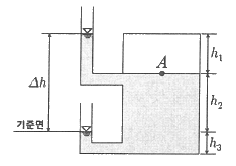
- h1
- △h+h3
- h2+h3
- h1+h2
(정답률: 39%)
63. 말뚝의 지지력 공식 중 엔지니어링 뉴스(Engineering News) 공식에 대한 설명으로 옳은 것은?
- 정역학적 지지력 공식이다.
- 동역학적 지지력 공식이다.
- 군항의 지지력 공식이다.
- 전달파를 이용한 지지력 공식이다.
(정답률: 58%)
64. 얕은 기초의 극한 지지력을 결정하는 Terzaghi의 이론에서 하중 Q가 점차 증가하여 기초가 아래로 침하할 때 다음 설명 중 옳지 않은 것은?
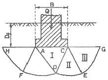
- Ⅰ의 △ACDD구역은 탄성영역이다.
- Ⅱ의 △CDE구역은 방사방향의 전단영역이다.
- Ⅲ의 △CEG구역은 Rankine의 주동영역이다.
- 원호 DE와 FD는 대수 나선형의 곡선이다.
(정답률: 62%)
65. 사질토의 정수의 투수시험을 하여 다음과 같은 결과를 얻었다. 이 흙의 투수계수는? (단, 시료의 단면적은 78.54cm2, 수두차는 15cm, 투수량은 400cm3, 투수시간은 3분, 시료의 길이는 12cm이다.)
- 3.15×10-3cm/sec
- 2.26×10-2cm/sec
- 1.78×10-2cm/sec
- 1.36×10-1cm/sec
(정답률: 41%)
66. 다음의 유효응력에 관한 설명 중 옳은 것은?
- 전응력은 일정하고 간극수압이 증가된다면, 흙의 체적은 감소하고 강도는 증가된다.
- 유효응력은 전응력에 간극수압을 더한 값이다.
- 토립자의 접촉면을 통해 전달되는 응력을 유효응력이라 한단.
- 공학적 성질이 동일한 2종류 흙의 유효응력이 동일하면 공학적 거동이 다르다.
(정답률: 49%)
67. 현장 다짐도 90%란 무엇을 의미하는가?
- 실내다짐 최대건조 밀도에 대한 90% 밀도를 말한다.
- 롤러로 다진 최대밀도에 대한 90% 밀도를 말한다.
- 현장함수비의 90% 함수비에 대한 다짐밀도를 말한다.
- 포화도가 90%인 때의 다짐밀도를 말한다.
(정답률: 40%)
68. 다음 중 댐의 사면이 가장 불안정한 경우는 어느 때인가?
- 사면의 수위가 천천히 하강할 때
- 사면이 포화상태에 있을 때
- 사면의 수위가 급격히 하강할 때
- 사면이 습윤상태에 있을 때
(정답률: 73%)
69. 압밀곡선(e-logP)에서 처녀압축곡선의 기울기는 무엇을 의미하는가?
- 압축계수
- 용적변화율
- 압밀계수
- 압추기수
(정답률: 14%)
70. 점토지반에서 N치로 추정할 수 있는 사항이 아닌 것은?
- 컨시스턴시
- 일축압축강도
- 상대밀도
- 기초지반의 허용지지력
(정답률: 43%)
71. 말뚝기초에서 부마찰력(negative skin friction)에 대한 설명으로 옳지 않은 것은?
- 지하수위 저하로 지반이 침하할 때 발생한다.
- 지반이 압밀진행주인 연약점토 지반인 경우에 발생한다.
- 발생이 예상되면 대책으로 말뚝주면에 역청 등으로 코팅하는 것이 좋다.
- 말뚝주면에 상방향으로 작용하는 마찰력이다.
(정답률: 88%)
72. 다음 중 흙의 전단강도를 감소시키는 요인이 아닌 것은?
- 공극수압의 증가
- 수분증가에 의한 점토의 팽창
- 수축 팽창 등으로 인하여 생긴 미세한 균열
- 함수비 감소에 따른 흙의 단위중량 감소
(정답률: 27%)
73. Rnakine의 주동토압계수에 관한 설명 중 틀린 것은?
- 주동토압계수는 내무마찰각이 크면 작아진다.
- 주동토압계수는 내부마찰각크기와 관계가 없다.
- 주동토압계수는 수동토압계수보다 작다.
- 정지토압계수는 주동토압계수보다 크고 수동토압계수보다 작다.
(정답률: 56%)
74. 일축압축시험에서 파괴면과 수평면이 이루는 각은 52°이었다. 이 흙의 내부마찰각(ø)은 얼마이고 일축압축강도가 0.76kg/cm2일 때 점착력(c)은 얼마인가?
- ø = 7°, c = 0.38kg/cm2
- ø = 14°, c = 0.30kg/cm2
- ø = 14°, c = 0.38kg/cm2
- ø = 7°, c = 0.30kg/cm2
(정답률: 28%)
75. 유선망의 특징에 관한 다음 설명 중 옳지 않은 것은?
- 각 유로의 침투수량은 같다.
- 유석놔 등수두선은 서로 직교한다.
- 유선망으로 되는 사각형은 이론상으로 정사각형이다.
- 침투속도 및 동수경사는 유선망의 폭에 비례한다.
(정답률: 61%)
76. 직경 30cm 재하판으로 측정된 지지력계수 K30이 12.32kg/cm3 이면 직경 75cm 재하판으로 측정된 지지력계수 K75는?
- 8.2 kg/cm3
- 5.6 kg/cm3
- 18.5 kg/cm3
- 4.5 kg/cm3
(정답률: 56%)
77. 포화점토의 일축압축 시험 결과 자연상태 점토의 일축압축 강도와 흐트러진 상태의 일축압축 강도가 각각 1.8kg/cm2, 0.4kg/cm2 였다. 이 점토의 예민비는?
- 0.72
- 0.22
- 4.5
- 6.4
(정답률: 50%)
78. 흙 시료의 소성한계 측정은 몇 번체를 통과한 것을 사용하는가?
- 40번체
- 80번체
- 100번체
- 200번체
(정답률: 39%)
79. 점성토 개량 공법 중 이용도가 가장 낮은 공법은?
- Paper-drain 공법
- Pre-loading 공법
- Sand-drain 공법
- Soil-cement 공법
(정답률: 42%)
80. 다음 중 흙의 포화단위중량을 나타낸 식은? (단, e : 공극비, S : 포화도, Gs : 비중, γw : 물의 단위중량)
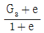
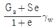
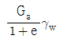
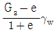
(정답률: 34%)